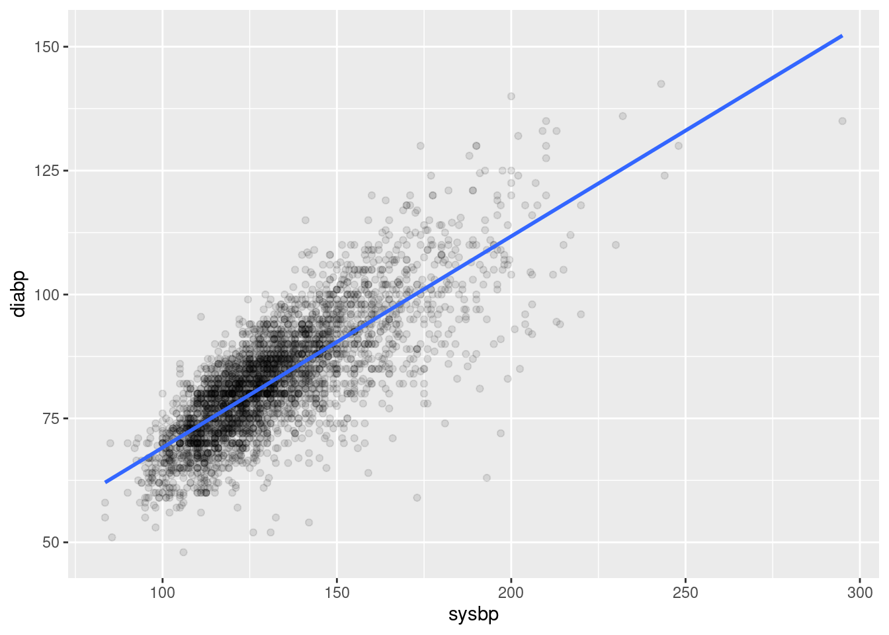
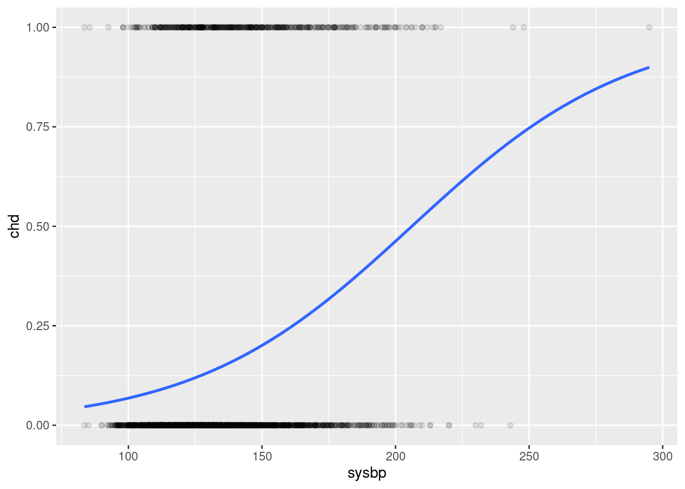

# Load packages
pacman::p_load(
rio, # import data
here, # easy file referencing
tidyverse, # set of core packages used in everyday data analyses
janitor, # simplify variable names
labelled, # variable label
broom, # tidy model object
lmtest, # compare models
gtsummary, # creates presentation-ready tables summarizing data
gt # customize gtsummary output
)
# Set theme for gtsummary output
theme_gtsummary_compact()Logistic regression
Step 0 - Set up
Step 1 - Import and explore data
# Import data
df <- import(here('data', 'heart.csv'))
# Explore
skimr::skim(df)| Name | df |
| Number of rows | 4238 |
| Number of columns | 16 |
| _______________________ | |
| Column type frequency: | |
| numeric | 16 |
| ________________________ | |
| Group variables | None |
Variable type: numeric
| skim_variable | n_missing | complete_rate | mean | sd | p0 | p25 | p50 | p75 | p100 | hist |
|---|---|---|---|---|---|---|---|---|---|---|
| male | 0 | 1.00 | 0.43 | 0.50 | 0.00 | 0.00 | 0.0 | 1.00 | 1.0 | ▇▁▁▁▆ |
| age | 0 | 1.00 | 49.58 | 8.57 | 32.00 | 42.00 | 49.0 | 56.00 | 70.0 | ▃▇▆▆▂ |
| education | 105 | 0.98 | 1.98 | 1.02 | 1.00 | 1.00 | 2.0 | 3.00 | 4.0 | ▇▆▁▃▂ |
| currentSmoker | 0 | 1.00 | 0.49 | 0.50 | 0.00 | 0.00 | 0.0 | 1.00 | 1.0 | ▇▁▁▁▇ |
| cigsPerDay | 29 | 0.99 | 9.00 | 11.92 | 0.00 | 0.00 | 0.0 | 20.00 | 70.0 | ▇▃▁▁▁ |
| BPMeds | 53 | 0.99 | 0.03 | 0.17 | 0.00 | 0.00 | 0.0 | 0.00 | 1.0 | ▇▁▁▁▁ |
| prevalentStroke | 0 | 1.00 | 0.01 | 0.08 | 0.00 | 0.00 | 0.0 | 0.00 | 1.0 | ▇▁▁▁▁ |
| prevalentHyp | 0 | 1.00 | 0.31 | 0.46 | 0.00 | 0.00 | 0.0 | 1.00 | 1.0 | ▇▁▁▁▃ |
| diabetes | 0 | 1.00 | 0.03 | 0.16 | 0.00 | 0.00 | 0.0 | 0.00 | 1.0 | ▇▁▁▁▁ |
| totChol | 50 | 0.99 | 236.72 | 44.59 | 107.00 | 206.00 | 234.0 | 263.00 | 696.0 | ▆▇▁▁▁ |
| sysBP | 0 | 1.00 | 132.35 | 22.04 | 83.50 | 117.00 | 128.0 | 144.00 | 295.0 | ▇▇▁▁▁ |
| diaBP | 0 | 1.00 | 82.89 | 11.91 | 48.00 | 75.00 | 82.0 | 89.88 | 142.5 | ▁▇▅▁▁ |
| BMI | 19 | 1.00 | 25.80 | 4.08 | 15.54 | 23.07 | 25.4 | 28.04 | 56.8 | ▅▇▁▁▁ |
| heartRate | 1 | 1.00 | 75.88 | 12.03 | 44.00 | 68.00 | 75.0 | 83.00 | 143.0 | ▂▇▃▁▁ |
| glucose | 388 | 0.91 | 81.97 | 23.96 | 40.00 | 71.00 | 78.0 | 87.00 | 394.0 | ▇▁▁▁▁ |
| TenYearCHD | 0 | 1.00 | 0.15 | 0.36 | 0.00 | 0.00 | 0.0 | 0.00 | 1.0 | ▇▁▁▁▂ |
Step 2 - Prepare data for required output
# Data management: join, filter, mutate, select, set labels
df1 <- df %>%
clean_names() %>%
drop_na() %>%
mutate(
across(c(male, current_smoker, bp_meds:diabetes), as.factor)
) %>%
select(
gender = male,
age,
smoke = current_smoker,
cigs = cigs_per_day,
bpmeds = bp_meds,
stroke = prevalent_stroke,
hyper = prevalent_hyp,
diabetes,
chol = tot_chol,
sysbp = sys_bp,
diabp = dia_bp,
bmi,
hr = heart_rate,
glucose,
chd = ten_year_chd
) %>%
set_variable_labels(
gender = 'Gender',
age = 'Age',
smoke = 'Current smoker',
cigs = 'Cigarettes/day',
bpmeds = 'Blood pressure medication',
stroke = 'History of stroke',
hyper = 'Hypertensive',
diabetes = 'Diabetes',
chol = 'Cholesterol ',
sysbp = 'Systolic',
diabp = 'Diastolic',
bmi = 'BMI',
hr = 'Heart rate',
glucose = 'Glucose',
chd = '10 year risk of CHD'
)Linear regression vs logistic regression
# Linear
df1 %>%
ggplot(aes(sysbp, diabp)) +
geom_point(alpha = 0.1) +
geom_smooth(
method = lm,
se = FALSE)

# Logistic
df1 %>%
ggplot(aes(sysbp, chd)) +
geom_point(alpha = 0.1) +
geom_smooth(
method = "glm", se = FALSE,
method.args = list(family = "binomial"))


Basic Logistic Regression Commands
object <- glm(formula = dv ~ iv1 + iv2 + iv3, family = "binomial", data = df)
summary(object) # results in logit coefficientsformula =The model is provided toglm()as an equation, with the outcome on the left and explanatory variables on the right of a tilde~.family =This determines the type of model to run. For logistic regression, usefamily = "binomial", for poisson usefamily = "poisson". Other examples are in the table below.data =Specify your data frame
Step 3 - Univariate
Use univariable analysis to explore the unadjusted association between variables and outcome. Each of the interested variables will be included in a logistic regression model, one for each time.
# Using stat package in base R
uni_gender <- glm(chd ~ gender, 'binomial', df1)
summary(uni_gender)
Call:
glm(formula = chd ~ gender, family = "binomial", data = df1)
Coefficients:
Estimate Std. Error z value Pr(>|z|)
(Intercept) -1.96515 0.06753 -29.100 < 2e-16 ***
gender1 0.51041 0.09262 5.511 3.57e-08 ***
---
Signif. codes: 0 '***' 0.001 '**' 0.01 '*' 0.05 '.' 0.1 ' ' 1
(Dispersion parameter for binomial family taken to be 1)
Null deviance: 3120.5 on 3655 degrees of freedom
Residual deviance: 3090.0 on 3654 degrees of freedom
AIC: 3094
Number of Fisher Scoring iterations: 4exp(cbind(OR = coef(uni_gender), confint(uni_gender))) OR 2.5 % 97.5 %
(Intercept) 0.1401345 0.1224839 0.1596229
gender1 1.6659711 1.3898893 1.9985828tidy(uni_gender, exponentiate = TRUE, conf.int = TRUE)# A tibble: 2 × 7
term estimate std.error statistic p.value conf.low conf.high
<chr> <dbl> <dbl> <dbl> <dbl> <dbl> <dbl>
1 (Intercept) 0.140 0.0675 -29.1 3.61e-186 0.122 0.160
2 gender1 1.67 0.0926 5.51 3.57e- 8 1.39 2.00 uni_age <- glm(chd ~ age, 'binomial', df1)
summary(uni_age)
Call:
glm(formula = chd ~ age, family = "binomial", data = df1)
Coefficients:
Estimate Std. Error z value Pr(>|z|)
(Intercept) -5.716299 0.307832 -18.57 <2e-16 ***
age 0.077674 0.005703 13.62 <2e-16 ***
---
Signif. codes: 0 '***' 0.001 '**' 0.01 '*' 0.05 '.' 0.1 ' ' 1
(Dispersion parameter for binomial family taken to be 1)
Null deviance: 3120.5 on 3655 degrees of freedom
Residual deviance: 2920.3 on 3654 degrees of freedom
AIC: 2924.3
Number of Fisher Scoring iterations: 5tidy(uni_age, exponentiate = TRUE, conf.int = TRUE)# A tibble: 2 × 7
term estimate std.error statistic p.value conf.low conf.high
<chr> <dbl> <dbl> <dbl> <dbl> <dbl> <dbl>
1 (Intercept) 0.00329 0.308 -18.6 5.67e-77 0.00179 0.00598
2 age 1.08 0.00570 13.6 3.03e-42 1.07 1.09 # Using gtsummary::tbl_uvregression
t_uni <- df1 %>%
tbl_uvregression( # produce univariate table
method = glm, # generalised linear model
y = chd, # define outcome variable
method.args = list(family = binomial), # arguments for glm
exponentiate = TRUE, # exponentiate to produce OR
hide_n = TRUE # hide N column
) %>%
add_global_p() %>% # show global p instead
bold_p(0.1)
t_uni| Characteristic | OR1 | 95% CI1 | p-value |
|---|---|---|---|
| Gender | <0.001 | ||
| 0 | — | — | |
| 1 | 1.67 | 1.39, 2.00 | |
| Age | 1.08 | 1.07, 1.09 | <0.001 |
| Current smoker | 0.2 | ||
| 0 | — | — | |
| 1 | 1.11 | 0.93, 1.33 | |
| Cigarettes/day | 1.01 | 1.00, 1.02 | 0.002 |
| Blood pressure medication | <0.001 | ||
| 0 | — | — | |
| 1 | 2.91 | 1.92, 4.33 | |
| History of stroke | 0.011 | ||
| 0 | — | — | |
| 1 | 3.46 | 1.36, 8.25 | |
| Hypertensive | <0.001 | ||
| 0 | — | — | |
| 1 | 2.73 | 2.27, 3.28 | |
| Diabetes | <0.001 | ||
| 0 | — | — | |
| 1 | 3.18 | 2.06, 4.82 | |
| Cholesterol | 1.01 | 1.00, 1.01 | <0.001 |
| Systolic | 1.02 | 1.02, 1.03 | <0.001 |
| Diastolic | 1.03 | 1.03, 1.04 | <0.001 |
| BMI | 1.05 | 1.03, 1.08 | <0.001 |
| Heart rate | 1.00 | 1.00, 1.01 | 0.2 |
| Glucose | 1.01 | 1.01, 1.01 | <0.001 |
| 1 OR = Odds Ratio, CI = Confidence Interval | |||
Step 4 - Multivariate
Variables inclusion and selection
A major problem when building a logistic model is to select which variables to include.
We can start a regression using either a full (saturated) model, or a null (empty) model, which starts only with the intercept term.
# full model
fullmodel <- glm(
chd ~ gender + age + smoke + cigs + bpmeds + stroke + hyper +
diabetes + chol + sysbp + diabp + bmi + hr + glucose,
family = "binomial",
data = df1
)
summary(fullmodel)
Call:
glm(formula = chd ~ gender + age + smoke + cigs + bpmeds + stroke +
hyper + diabetes + chol + sysbp + diabp + bmi + hr + glucose,
family = "binomial", data = df1)
Coefficients:
Estimate Std. Error z value Pr(>|z|)
(Intercept) -8.489544 0.694682 -12.221 < 2e-16 ***
gender1 0.554042 0.109015 5.082 3.73e-07 ***
age 0.064193 0.006634 9.676 < 2e-16 ***
smoke1 0.071318 0.156671 0.455 0.64896
cigs 0.018000 0.006235 2.887 0.00389 **
bpmeds1 0.157576 0.233969 0.673 0.50063
stroke1 0.706043 0.489107 1.444 0.14887
hyper1 0.233160 0.138076 1.689 0.09129 .
diabetes1 0.042959 0.315212 0.136 0.89160
chol 0.002262 0.001126 2.009 0.04453 *
sysbp 0.015706 0.003795 4.139 3.49e-05 ***
diabp -0.004608 0.006418 -0.718 0.47275
bmi 0.008057 0.012681 0.635 0.52517
hr -0.003074 0.004206 -0.731 0.46494
glucose 0.007124 0.002237 3.185 0.00145 **
---
Signif. codes: 0 '***' 0.001 '**' 0.01 '*' 0.05 '.' 0.1 ' ' 1
(Dispersion parameter for binomial family taken to be 1)
Null deviance: 3120.5 on 3655 degrees of freedom
Residual deviance: 2755.1 on 3641 degrees of freedom
AIC: 2785.1
Number of Fisher Scoring iterations: 5# null model
nullmodel <- glm(
chd ~ 1,
family = "binomial",
data = df1
)
summary(nullmodel)
Call:
glm(formula = chd ~ 1, family = "binomial", data = df1)
Coefficients:
Estimate Std. Error z value Pr(>|z|)
(Intercept) -1.71627 0.04602 -37.3 <2e-16 ***
---
Signif. codes: 0 '***' 0.001 '**' 0.01 '*' 0.05 '.' 0.1 ' ' 1
(Dispersion parameter for binomial family taken to be 1)
Null deviance: 3120.5 on 3655 degrees of freedom
Residual deviance: 3120.5 on 3655 degrees of freedom
AIC: 3122.5
Number of Fisher Scoring iterations: 3- Backward elimination
# Remove diabetes
model1 <- glm(
chd ~ gender + age + smoke + cigs + bpmeds + stroke + hyper +
chol + sysbp + diabp + bmi + hr + glucose,
family = "binomial",
data = df1
)
summary(model1)
Call:
glm(formula = chd ~ gender + age + smoke + cigs + bpmeds + stroke +
hyper + chol + sysbp + diabp + bmi + hr + glucose, family = "binomial",
data = df1)
Coefficients:
Estimate Std. Error z value Pr(>|z|)
(Intercept) -8.507943 0.681508 -12.484 < 2e-16 ***
gender1 0.554451 0.108976 5.088 3.62e-07 ***
age 0.064216 0.006632 9.683 < 2e-16 ***
smoke1 0.071179 0.156658 0.454 0.6496
cigs 0.017993 0.006235 2.886 0.0039 **
bpmeds1 0.158036 0.233931 0.676 0.4993
stroke1 0.705485 0.489030 1.443 0.1491
hyper1 0.233411 0.138061 1.691 0.0909 .
chol 0.002264 0.001126 2.011 0.0443 *
sysbp 0.015711 0.003795 4.140 3.47e-05 ***
diabp -0.004632 0.006415 -0.722 0.4702
bmi 0.008170 0.012655 0.646 0.5186
hr -0.003076 0.004206 -0.731 0.4645
glucose 0.007325 0.001686 4.345 1.39e-05 ***
---
Signif. codes: 0 '***' 0.001 '**' 0.01 '*' 0.05 '.' 0.1 ' ' 1
(Dispersion parameter for binomial family taken to be 1)
Null deviance: 3120.5 on 3655 degrees of freedom
Residual deviance: 2755.1 on 3642 degrees of freedom
AIC: 2783.1
Number of Fisher Scoring iterations: 5lrtest(fullmodel, model1) #perform likelihood ratio test for differencesLikelihood ratio test
Model 1: chd ~ gender + age + smoke + cigs + bpmeds + stroke + hyper +
diabetes + chol + sysbp + diabp + bmi + hr + glucose
Model 2: chd ~ gender + age + smoke + cigs + bpmeds + stroke + hyper +
chol + sysbp + diabp + bmi + hr + glucose
#Df LogLik Df Chisq Pr(>Chisq)
1 15 -1377.6
2 14 -1377.6 -1 0.0185 0.8918# Remove smoke
model2 <- glm(
chd ~ gender + age + cigs + bpmeds + stroke + hyper +
chol + sysbp + diabp + bmi + hr + glucose,
family = "binomial",
data = df1
)
summary(model2)
Call:
glm(formula = chd ~ gender + age + cigs + bpmeds + stroke + hyper +
chol + sysbp + diabp + bmi + hr + glucose, family = "binomial",
data = df1)
Coefficients:
Estimate Std. Error z value Pr(>|z|)
(Intercept) -8.462189 0.673924 -12.557 < 2e-16 ***
gender1 0.554089 0.109007 5.083 3.71e-07 ***
age 0.064010 0.006615 9.676 < 2e-16 ***
cigs 0.020070 0.004229 4.745 2.08e-06 ***
bpmeds1 0.158170 0.233881 0.676 0.4989
stroke1 0.703543 0.488737 1.440 0.1500
hyper1 0.232933 0.138032 1.688 0.0915 .
chol 0.002257 0.001126 2.005 0.0450 *
sysbp 0.015736 0.003793 4.149 3.34e-05 ***
diabp -0.004708 0.006413 -0.734 0.4629
bmi 0.007504 0.012575 0.597 0.5507
hr -0.003035 0.004204 -0.722 0.4703
glucose 0.007320 0.001687 4.340 1.43e-05 ***
---
Signif. codes: 0 '***' 0.001 '**' 0.01 '*' 0.05 '.' 0.1 ' ' 1
(Dispersion parameter for binomial family taken to be 1)
Null deviance: 3120.5 on 3655 degrees of freedom
Residual deviance: 2755.4 on 3643 degrees of freedom
AIC: 2781.4
Number of Fisher Scoring iterations: 5lrtest(model1, model2)Likelihood ratio test
Model 1: chd ~ gender + age + smoke + cigs + bpmeds + stroke + hyper +
chol + sysbp + diabp + bmi + hr + glucose
Model 2: chd ~ gender + age + cigs + bpmeds + stroke + hyper + chol +
sysbp + diabp + bmi + hr + glucose
#Df LogLik Df Chisq Pr(>Chisq)
1 14 -1377.6
2 13 -1377.7 -1 0.2058 0.6501# Remove bmi
model3 <- glm(
chd ~ gender + age + cigs + bpmeds + stroke + hyper +
chol + sysbp + diabp + hr + glucose,
family = "binomial",
data = df1
)
summary(model3)
Call:
glm(formula = chd ~ gender + age + cigs + bpmeds + stroke + hyper +
chol + sysbp + diabp + hr + glucose, family = "binomial",
data = df1)
Coefficients:
Estimate Std. Error z value Pr(>|z|)
(Intercept) -8.337778 0.640080 -13.026 < 2e-16 ***
gender1 0.556151 0.108935 5.105 3.30e-07 ***
age 0.063999 0.006615 9.675 < 2e-16 ***
cigs 0.019889 0.004221 4.712 2.46e-06 ***
bpmeds1 0.161319 0.233777 0.690 0.4902
stroke1 0.709695 0.487608 1.455 0.1455
hyper1 0.238375 0.137774 1.730 0.0836 .
chol 0.002270 0.001125 2.017 0.0437 *
sysbp 0.015732 0.003793 4.147 3.36e-05 ***
diabp -0.004000 0.006303 -0.635 0.5257
hr -0.002993 0.004202 -0.712 0.4762
glucose 0.007382 0.001686 4.378 1.20e-05 ***
---
Signif. codes: 0 '***' 0.001 '**' 0.01 '*' 0.05 '.' 0.1 ' ' 1
(Dispersion parameter for binomial family taken to be 1)
Null deviance: 3120.5 on 3655 degrees of freedom
Residual deviance: 2755.7 on 3644 degrees of freedom
AIC: 2779.7
Number of Fisher Scoring iterations: 5lrtest(model2, model3)Likelihood ratio test
Model 1: chd ~ gender + age + cigs + bpmeds + stroke + hyper + chol +
sysbp + diabp + bmi + hr + glucose
Model 2: chd ~ gender + age + cigs + bpmeds + stroke + hyper + chol +
sysbp + diabp + hr + glucose
#Df LogLik Df Chisq Pr(>Chisq)
1 13 -1377.7
2 12 -1377.8 -1 0.3549 0.5514# Remove diabp
model4 <- glm(
chd ~ gender + age + cigs + bpmeds + stroke + hyper +
chol + sysbp + hr + glucose,
family = "binomial",
data = df1
)
summary(model4)
Call:
glm(formula = chd ~ gender + age + cigs + bpmeds + stroke + hyper +
chol + sysbp + hr + glucose, family = "binomial", data = df1)
Coefficients:
Estimate Std. Error z value Pr(>|z|)
(Intercept) -8.499576 0.588117 -14.452 < 2e-16 ***
gender1 0.546744 0.107886 5.068 4.02e-07 ***
age 0.064914 0.006462 10.046 < 2e-16 ***
cigs 0.019992 0.004217 4.740 2.13e-06 ***
bpmeds1 0.164478 0.233463 0.705 0.4811
stroke1 0.702113 0.487382 1.441 0.1497
hyper1 0.224527 0.135918 1.652 0.0986 .
chol 0.002271 0.001125 2.018 0.0436 *
sysbp 0.014183 0.002901 4.888 1.02e-06 ***
hr -0.003101 0.004199 -0.738 0.4603
glucose 0.007437 0.001684 4.417 1.00e-05 ***
---
Signif. codes: 0 '***' 0.001 '**' 0.01 '*' 0.05 '.' 0.1 ' ' 1
(Dispersion parameter for binomial family taken to be 1)
Null deviance: 3120.5 on 3655 degrees of freedom
Residual deviance: 2756.1 on 3645 degrees of freedom
AIC: 2778.1
Number of Fisher Scoring iterations: 5lrtest(model3, model4)Likelihood ratio test
Model 1: chd ~ gender + age + cigs + bpmeds + stroke + hyper + chol +
sysbp + diabp + hr + glucose
Model 2: chd ~ gender + age + cigs + bpmeds + stroke + hyper + chol +
sysbp + hr + glucose
#Df LogLik Df Chisq Pr(>Chisq)
1 12 -1377.8
2 11 -1378.0 -1 0.402 0.5261# Remove bpmeds
model5 <- glm(
chd ~ gender + age + cigs + stroke + hyper +
chol + sysbp + hr + glucose,
family = "binomial",
data = df1
)
summary(model5)
Call:
glm(formula = chd ~ gender + age + cigs + stroke + hyper + chol +
sysbp + hr + glucose, family = "binomial", data = df1)
Coefficients:
Estimate Std. Error z value Pr(>|z|)
(Intercept) -8.532981 0.586478 -14.550 < 2e-16 ***
gender1 0.543462 0.107767 5.043 4.58e-07 ***
age 0.064987 0.006462 10.058 < 2e-16 ***
cigs 0.019995 0.004218 4.740 2.13e-06 ***
stroke1 0.740398 0.483783 1.530 0.1259
hyper1 0.232212 0.135358 1.716 0.0862 .
chol 0.002297 0.001125 2.043 0.0411 *
sysbp 0.014461 0.002875 5.030 4.90e-07 ***
hr -0.003228 0.004197 -0.769 0.4418
glucose 0.007434 0.001680 4.425 9.65e-06 ***
---
Signif. codes: 0 '***' 0.001 '**' 0.01 '*' 0.05 '.' 0.1 ' ' 1
(Dispersion parameter for binomial family taken to be 1)
Null deviance: 3120.5 on 3655 degrees of freedom
Residual deviance: 2756.6 on 3646 degrees of freedom
AIC: 2776.6
Number of Fisher Scoring iterations: 5lrtest(model4, model5)Likelihood ratio test
Model 1: chd ~ gender + age + cigs + bpmeds + stroke + hyper + chol +
sysbp + hr + glucose
Model 2: chd ~ gender + age + cigs + stroke + hyper + chol + sysbp + hr +
glucose
#Df LogLik Df Chisq Pr(>Chisq)
1 11 -1378.0
2 10 -1378.3 -1 0.4899 0.484# Remove hr
model6 <- glm(
chd ~ gender + age + cigs + stroke + hyper +
chol + sysbp + glucose,
family = "binomial",
data = df1
)
summary(model6)
Call:
glm(formula = chd ~ gender + age + cigs + stroke + hyper + chol +
sysbp + glucose, family = "binomial", data = df1)
Coefficients:
Estimate Std. Error z value Pr(>|z|)
(Intercept) -8.739521 0.522563 -16.724 < 2e-16 ***
gender1 0.553152 0.107037 5.168 2.37e-07 ***
age 0.065337 0.006444 10.140 < 2e-16 ***
cigs 0.019574 0.004182 4.681 2.85e-06 ***
stroke1 0.751412 0.483562 1.554 0.1202
hyper1 0.226231 0.135098 1.675 0.0940 .
chol 0.002248 0.001122 2.003 0.0452 *
sysbp 0.014219 0.002857 4.976 6.48e-07 ***
glucose 0.007314 0.001673 4.373 1.23e-05 ***
---
Signif. codes: 0 '***' 0.001 '**' 0.01 '*' 0.05 '.' 0.1 ' ' 1
(Dispersion parameter for binomial family taken to be 1)
Null deviance: 3120.5 on 3655 degrees of freedom
Residual deviance: 2757.2 on 3647 degrees of freedom
AIC: 2775.2
Number of Fisher Scoring iterations: 5lrtest(model5, model6)Likelihood ratio test
Model 1: chd ~ gender + age + cigs + stroke + hyper + chol + sysbp + hr +
glucose
Model 2: chd ~ gender + age + cigs + stroke + hyper + chol + sysbp + glucose
#Df LogLik Df Chisq Pr(>Chisq)
1 10 -1378.3
2 9 -1378.6 -1 0.5944 0.4407# Remove stroke
model7 <- glm(
chd ~ gender + age + cigs + hyper +
chol + sysbp + glucose,
family = "binomial",
data = df1
)
summary(model7)
Call:
glm(formula = chd ~ gender + age + cigs + hyper + chol + sysbp +
glucose, family = "binomial", data = df1)
Coefficients:
Estimate Std. Error z value Pr(>|z|)
(Intercept) -8.749106 0.522375 -16.749 < 2e-16 ***
gender1 0.554155 0.106964 5.181 2.21e-07 ***
age 0.065531 0.006436 10.182 < 2e-16 ***
cigs 0.019375 0.004178 4.637 3.53e-06 ***
hyper1 0.234235 0.134858 1.737 0.0824 .
chol 0.002239 0.001122 1.996 0.0459 *
sysbp 0.014257 0.002855 4.993 5.95e-07 ***
glucose 0.007327 0.001674 4.378 1.20e-05 ***
---
Signif. codes: 0 '***' 0.001 '**' 0.01 '*' 0.05 '.' 0.1 ' ' 1
(Dispersion parameter for binomial family taken to be 1)
Null deviance: 3120.5 on 3655 degrees of freedom
Residual deviance: 2759.5 on 3648 degrees of freedom
AIC: 2775.5
Number of Fisher Scoring iterations: 5lrtest(model6, model7)Likelihood ratio test
Model 1: chd ~ gender + age + cigs + stroke + hyper + chol + sysbp + glucose
Model 2: chd ~ gender + age + cigs + hyper + chol + sysbp + glucose
#Df LogLik Df Chisq Pr(>Chisq)
1 9 -1378.6
2 8 -1379.7 -1 2.2852 0.1306# Remove hyper
model8 <- glm(
chd ~ gender + age + cigs +
chol + sysbp + glucose,
family = "binomial",
data = df1
)
summary(model8)
Call:
glm(formula = chd ~ gender + age + cigs + chol + sysbp + glucose,
family = "binomial", data = df1)
Coefficients:
Estimate Std. Error z value Pr(>|z|)
(Intercept) -9.129843 0.475530 -19.199 < 2e-16 ***
gender1 0.561446 0.106845 5.255 1.48e-07 ***
age 0.065896 0.006426 10.254 < 2e-16 ***
cigs 0.019226 0.004176 4.604 4.14e-06 ***
chol 0.002272 0.001123 2.024 0.043 *
sysbp 0.017534 0.002149 8.159 3.38e-16 ***
glucose 0.007280 0.001677 4.342 1.41e-05 ***
---
Signif. codes: 0 '***' 0.001 '**' 0.01 '*' 0.05 '.' 0.1 ' ' 1
(Dispersion parameter for binomial family taken to be 1)
Null deviance: 3120.5 on 3655 degrees of freedom
Residual deviance: 2762.5 on 3649 degrees of freedom
AIC: 2776.5
Number of Fisher Scoring iterations: 5lrtest(model7, model8)Likelihood ratio test
Model 1: chd ~ gender + age + cigs + hyper + chol + sysbp + glucose
Model 2: chd ~ gender + age + cigs + chol + sysbp + glucose
#Df LogLik Df Chisq Pr(>Chisq)
1 8 -1379.7
2 7 -1381.2 -1 2.9973 0.08341 .
---
Signif. codes: 0 '***' 0.001 '**' 0.01 '*' 0.05 '.' 0.1 ' ' 1- Stepwise selection using
step()
m1 <- step(fullmodel, direction = "backward", trace = FALSE)
m2 <- step(nullmodel, direction = "forward", trace = FALSE,
scope = list(upper = fullmodel, lower = nullmodel))
m3 <- step(nullmodel, direction="both", trace = FALSE,
scope = list(upper = fullmodel, lower = nullmodel))
lrtest(m1, m2)Likelihood ratio test
Model 1: chd ~ gender + age + cigs + stroke + hyper + chol + sysbp + glucose
Model 2: chd ~ age + sysbp + gender + cigs + glucose + chol + hyper +
stroke
#Df LogLik Df Chisq Pr(>Chisq)
1 9 -1378.6
2 9 -1378.6 0 0 1lrtest(m1, m3)Likelihood ratio test
Model 1: chd ~ gender + age + cigs + stroke + hyper + chol + sysbp + glucose
Model 2: chd ~ age + sysbp + gender + cigs + glucose + chol + hyper +
stroke
#Df LogLik Df Chisq Pr(>Chisq)
1 9 -1378.6
2 9 -1378.6 0 0 1summary(m1)
Call:
glm(formula = chd ~ gender + age + cigs + stroke + hyper + chol +
sysbp + glucose, family = "binomial", data = df1)
Coefficients:
Estimate Std. Error z value Pr(>|z|)
(Intercept) -8.739521 0.522563 -16.724 < 2e-16 ***
gender1 0.553152 0.107037 5.168 2.37e-07 ***
age 0.065337 0.006444 10.140 < 2e-16 ***
cigs 0.019574 0.004182 4.681 2.85e-06 ***
stroke1 0.751412 0.483562 1.554 0.1202
hyper1 0.226231 0.135098 1.675 0.0940 .
chol 0.002248 0.001122 2.003 0.0452 *
sysbp 0.014219 0.002857 4.976 6.48e-07 ***
glucose 0.007314 0.001673 4.373 1.23e-05 ***
---
Signif. codes: 0 '***' 0.001 '**' 0.01 '*' 0.05 '.' 0.1 ' ' 1
(Dispersion parameter for binomial family taken to be 1)
Null deviance: 3120.5 on 3655 degrees of freedom
Residual deviance: 2757.2 on 3647 degrees of freedom
AIC: 2775.2
Number of Fisher Scoring iterations: 5tbl_regressionto produce nice table
t_multi <- tbl_regression(m1, exponentiate = TRUE)
t_multi| Characteristic | OR1 | 95% CI1 | p-value |
|---|---|---|---|
| Gender | |||
| 0 | — | — | |
| 1 | 1.74 | 1.41, 2.15 | <0.001 |
| Age | 1.07 | 1.05, 1.08 | <0.001 |
| Cigarettes/day | 1.02 | 1.01, 1.03 | <0.001 |
| History of stroke | |||
| 0 | — | — | |
| 1 | 2.12 | 0.79, 5.40 | 0.12 |
| Hypertensive | |||
| 0 | — | — | |
| 1 | 1.25 | 0.96, 1.63 | 0.094 |
| Cholesterol | 1.00 | 1.00, 1.00 | 0.045 |
| Systolic | 1.01 | 1.01, 1.02 | <0.001 |
| Glucose | 1.01 | 1.00, 1.01 | <0.001 |
| 1 OR = Odds Ratio, CI = Confidence Interval | |||
Step 5 - Join univariate & multivariate tables
t_stat <- df1 %>%
mutate(chdfac = factor(chd,
levels = c(1, 0),
labels = c('Yes', 'No'))) %>%
tbl_summary(by = chdfac) %>%
add_overall() %>%
bold_labels() %>%
modify_header(all_stat_cols() ~ "**{level}**<br>N = {n}")
tbl_merge(
list(t_stat, t_uni, t_multi),
tab_spanner = c('Coronary Heart Disease', 'Univariate', 'Multivariate')
) %>%
as_gt() %>%
tab_style(
style = cell_text(weight = "bold"),
locations = cells_column_spanners()
)| Characteristic | Coronary Heart Disease | Univariate | Multivariate | ||||||
|---|---|---|---|---|---|---|---|---|---|
| Overall N = 36561 |
Yes N = 5571 |
No N = 30991 |
OR2 | 95% CI2 | p-value | OR2 | 95% CI2 | p-value | |
| Gender | <0.001 | ||||||||
| 0 | 2,034 (56%) | 250 (45%) | 1,784 (58%) | — | — | — | — | ||
| 1 | 1,622 (44%) | 307 (55%) | 1,315 (42%) | 1.67 | 1.39, 2.00 | 1.74 | 1.41, 2.15 | <0.001 | |
| Age | 49 (42, 56) | 55 (49, 61) | 48 (42, 55) | 1.08 | 1.07, 1.09 | <0.001 | 1.07 | 1.05, 1.08 | <0.001 |
| Current smoker | 0.2 | ||||||||
| 0 | 1,868 (51%) | 272 (49%) | 1,596 (52%) | — | — | ||||
| 1 | 1,788 (49%) | 285 (51%) | 1,503 (48%) | 1.11 | 0.93, 1.33 | ||||
| Cigarettes/day | 0 (0, 20) | 1 (0, 20) | 0 (0, 20) | 1.01 | 1.00, 1.02 | 0.002 | 1.02 | 1.01, 1.03 | <0.001 |
| Blood pressure medication | <0.001 | ||||||||
| 0 | 3,545 (97%) | 520 (93%) | 3,025 (98%) | — | — | ||||
| 1 | 111 (3.0%) | 37 (6.6%) | 74 (2.4%) | 2.91 | 1.92, 4.33 | ||||
| History of stroke | 0.011 | ||||||||
| 0 | 3,635 (99%) | 549 (99%) | 3,086 (100%) | — | — | — | — | ||
| 1 | 21 (0.6%) | 8 (1.4%) | 13 (0.4%) | 3.46 | 1.36, 8.25 | 2.12 | 0.79, 5.40 | 0.12 | |
| Hypertensive | <0.001 | ||||||||
| 0 | 2,517 (69%) | 273 (49%) | 2,244 (72%) | — | — | — | — | ||
| 1 | 1,139 (31%) | 284 (51%) | 855 (28%) | 2.73 | 2.27, 3.28 | 1.25 | 0.96, 1.63 | 0.094 | |
| Diabetes | <0.001 | ||||||||
| 0 | 3,557 (97%) | 522 (94%) | 3,035 (98%) | — | — | ||||
| 1 | 99 (2.7%) | 35 (6.3%) | 64 (2.1%) | 3.18 | 2.06, 4.82 | ||||
| Cholesterol | 234 (206, 263) | 243 (214, 272) | 232 (205, 261) | 1.01 | 1.00, 1.01 | <0.001 | 1.00 | 1.00, 1.00 | 0.045 |
| Systolic | 128 (117, 144) | 139 (125, 159) | 127 (116, 141) | 1.02 | 1.02, 1.03 | <0.001 | 1.01 | 1.01, 1.02 | <0.001 |
| Diastolic | 82 (75, 90) | 85 (78, 95) | 81 (74, 88) | 1.03 | 1.03, 1.04 | <0.001 | |||
| BMI | 25.4 (23.1, 28.0) | 26.1 (23.6, 28.9) | 25.2 (23.0, 27.9) | 1.05 | 1.03, 1.08 | <0.001 | |||
| Heart rate | 75 (68, 82) | 75 (68, 84) | 75 (68, 82) | 1.00 | 1.00, 1.01 | 0.2 | |||
| Glucose | 78 (71, 87) | 79 (72, 90) | 78 (71, 86) | 1.01 | 1.01, 1.01 | <0.001 | 1.01 | 1.00, 1.01 | <0.001 |
| 10 year risk of CHD | 557 (15%) | 557 (100%) | 0 (0%) | ||||||
| 1 n (%); Median (IQR) | |||||||||
| 2 OR = Odds Ratio, CI = Confidence Interval | |||||||||